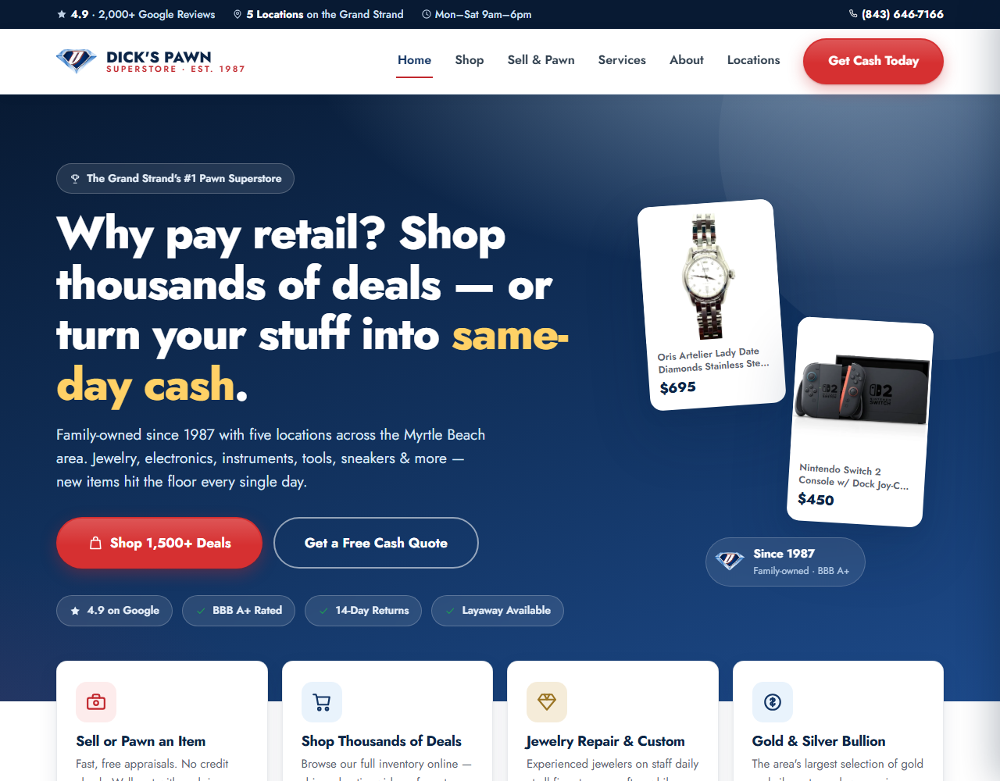

Where AI actually pays for itself in a pawn superstore.
The opportunity, the plan, and exactly how it plugs into the Shopify store you already run — same checkout, same apps, same admin, nothing replaced.
is live — open it in slide 2.
This deck contains no invented numbers. Every figure about your business was pulled from your live catalogue and public listings, and every projection on the calculator slide uses inputs you control.
I didn't bring a portfolio. I brought your website.
Before we talk about what AI could do, here's what it already did — one person, working from your live product feed.
Everything in this deck is the same kind of work, applied to the parts of the business that move money.

What your catalogue actually says about your floor
Pulled directly from your live product feed on 26 July 2026 — 1,565 items, 1,527 of them in stock.
You are a jewelry business with a superstore attached
65% of everything listed online is jewelry and gold. That is a strength — it's high-margin and it's what your jewelers are for — but online it means most visitors are handed 991 rings and asked to browse.
Two things I noticed in the data
Stock arrives in batches. The newest 8 items were all listed the same day. Between batches, other departments go quiet online even when product is on the floor.
Your tagging is good but private. Codes like GR, AP, HW are consistent enough to automate against — that's a real asset most shops don't have.
Source: dickspawn.com public product feed, retrieved 26 July 2026. Counts are in-stock items.
What's costing you today
I measured your live site against the rebuild on 26 July 2026. You can re-run every one of these.
| dickspawn.com today | The rebuild | Why it matters | |
|---|---|---|---|
| Homepage weight | 94.7 KB transferred 863 KB of HTML, 77 scripts | 7.7 KB | Most of your traffic is on a phone, often on beach-town cell service. |
| Time to first byte | 0.42 s | 0.15 s | Speed is a ranking factor and a bounce factor. |
| Business markup on homepage | None | All 5 stores | Hours, addresses, phone and rating handed to Google directly. |
| Per-city landing pages | None (404) | 5 pages | You compete in five separate local markets with one page. |
| Link previews when shared | Square logo | Designed card | Every text, post and email that shares your link. |
| Product page markup | Already correct ✓ | Matched | Credit where it's due — Shopify does this part well. |
Transfer sizes measured compressed, cache-busted, from the same connection. "Business markup" = LocalBusiness/PawnShop structured data; your homepage returned zero structured-data blocks.
The new site becomes your store's theme
You already own the hard part — Shopify runs your checkout, inventory and apps, and your product pages are already correct for Google. The redesign installs as a new theme on that same store. No migration, nothing rebuilt.
The new design is added as an unpublished theme. Customers see nothing.
A private link shows your real store — live products, live prices — in the new design.
When you approve, publishing is a single click. No downtime, no data moves.
Your current theme stays saved. If you ever want it back, that's one click too.
Checkout untouched
Payments, cart, shipping, taxes — all Shopify's engine, none of it changes.
Apps keep working
Call-for-Price, your SMS marketing tool, the eBay flow — they plug into the engine, not the design.
Same admin for staff
Your team adds and edits products exactly where they do today. Nothing new to learn.
Considered and rejected: replatforming (months of risk to rebuild what works), a separate second website (competes with your own store on Google), and a custom "headless" build (overkill without an engineering team). The theme route is the only zero-disruption option — and it's also the cheapest.
Sold in the store = gone from the site.
Automatically. Always.
Your inventory is one-of-a-kind — quantity one of everything. The worst failure a pawn shop's website can have is selling a ring in Conway that's still listed online.
A sync you have to babysit
- Every sale must be copied to the site — by hand or by a feed that can break
- A missed delisting means selling the same ring twice
- An angry refund, a bad review, staff time cleaning it up
Nothing to sync — the site is the store
- The website reads live inventory directly from Shopify
- Mark it sold at the counter → it's off the site that second
- No feed, no babysitting, no way for it to drift
This isn't a feature we build — it's a problem the architecture makes impossible. That's the best kind of fix.
In a pawn business, AI is a speed upgrade — not a cleverness upgrade
Your team already knows what things are worth. That judgement is the business, and it isn't for sale. What AI removes is the dead time around it — and every system follows one safe pattern, powered by Claude.
A photo is taken, an item arrives, a review comes in.
Claude writes the listing, applies the category, drafts the reply.
Invisible to customers. Sitting in your Shopify admin, waiting.
Review, edit if needed, click Active — the same click they make today.
On the site, correctly categorised, ready to sell.
Why drafts matter
Shopify has a built-in "draft product" state — invisible to customers until activated. The AI writes into drafts only. Nothing it produces reaches a customer without a human clicking approve. No new review tool to learn; the gate is the admin your team lives in.
What the AI never touches
Your pawn system — loans, tickets, customer identities, compliance — is never connected to the AI. Claude only ever sees merchandise: photos, titles, item numbers. And prices are suggestions; the number that goes live is always your appraiser's.
Photos in. Finished listing out.
The proof this is needed is in your own data: your product codes end in six different people's initials, in twelve different formats. That's your staff hand-typing every item into Shopify.
A phone page: 1–4 photos, the item number, optionally a few words — "14k rope chain, 24 inch, 20 grams".
Title in your house style, full description, correct department and category, condition notes it can see in the photos, and a suggested price range.
Photos attached, tags applied. Your appraiser sets the real price, clicks Active. Minutes of typing becomes seconds of reviewing.
This is the $1,500 pilot on the pricing slide: one department, before/after timing on 20 real items, written findings either way.
Your catalogue, finally organised like a superstore
The hidden problem
Your team tags products with internal shorthand — and it's consistent, which is genuinely rare. But it's private shorthand: while building the demo I found that reading one code naively files Louis Vuitton handbags under "Tools & Hardware". Your own website search inherits confusions like that today.
The fix
Claude reads all 1,565 products once — titles plus your existing codes — and writes clean, universal categories back into Shopify: department, type, brand, metal. Your staff's tags stay untouched; the new ones are added alongside.
Real category pages
"Gold Rings", "Power Tools", "Designer Bags" become true Shopify collections that update themselves as stock changes.
Jewelry gets navigable
65% of your catalogue is jewelry. Shoppers filter rings / necklaces / bracelets / watches instead of scrolling 991 items.
Every future item, automatic
New products get categorised the moment they're created — whether the Listing Assistant made them or a staff member typed them.
One-time AI cost for the full catalogue: under $10 — it runs as an overnight batch job. This is the least glamorous system in the plan and possibly the highest-value one.
Built on the same store, the same pattern
"You asked — it just came in"
Counter staff log what customers are hunting for. When a matching item lands in Shopify, Claude spots the match and drafts a text — sent through the SMS app you already pay for. A staff member approves the day's queue in one sitting.
Ask-the-store, answered instantly
A website chat that answers "are you open," "do you buy tools," and — because it reads your live Shopify inventory — "do you have any PS5s?" Every real conversation still ends with your phone number; the widget just absorbs the calls that never needed a person.
Every review, answered well
2,000+ Google reviews across five stores deserve replies. Claude drafts each one in your voice; a manager approves or edits before anything posts. Nothing reaches the public unread — same rule as everywhere else.
Notice what's not here: no new subscriptions, no new dashboards, no system your team has to learn. Everything lands in Shopify, your SMS app, or an approval queue.
How this plugs into the counter
Your pawn system stays the system of record. Nothing here touches a loan, a ticket or a hold — it reads inventory that's already been created and does the typing that happens afterwards.
Item taken in, ticket written, photographed. Exactly as today.
Holds the item number, loan and compliance data. We only ever read from it.
Photos cleaned, title and description written, category and tags applied, price range suggested.
Staff approve in the admin they already use. Nothing publishes unread.
Website, eBay, and anywhere else worth listing — from one approval.
A · Native API
Bravo — who now own PawnMaster — publish an API and already integrate with eBay, Amazon and GunBroker. If your licence includes it, this is a direct read and the cleanest option.
B · Your own eCommerce module
Bravo sell a storefront sync that already delists sold items automatically. If you're paying for it, we switch it on and add the AI layer above it rather than rebuilding it.
C · Scheduled export
If the licence has no API, any pawn system can export a file on a timer. Less elegant, identical result — and the enrichment layer doesn't care where the data came from, so we upgrade to A later without redoing the work.
257652 - dm, 514744-tbm, 113545 SFconway, 892819-South-SMT — twelve different formats, each ending in a person's initials. Software doesn't vary its own formatting. Those are people hand-keying items from the pawn system into Shopify, and the initials show it's at least six of them, each working their own department.
One question decides which path we take: what runs at your counter, and does your licence include API access or the eCommerce module? If you already pay for the sync, I'll tell you that and we'll scope around it — I'd rather build the layer that adds something than resell you what you own.
Your inputs, not my estimates
I don't know your listing volume or labour cost, so I haven't pretended to. Change these to your real figures and the maths updates.
What that works out to
Read this honestly: the top three are hard — they're just hours × wage. The bottom two are capacity, not profit: freed hours only turn into listings if you use them that way, and listed value is not margin. This is a model to argue with, not a promise.
What stays yours, always
Loans, tickets, IDs, reporting — your regulated core stays exactly as it is. The AI layer reads and writes merchandise listings, nothing else.
Claude sees photos of merchandise and product text. Never names, numbers, or transactions.
The AI suggests a range with its reasoning. The number that goes live is always your appraiser's call.
Listings, texts, review replies — all drafts until a human approves. Enforced by how the systems are built, not by policy.
The theme rolls back in one click. If we ever part ways, the theme, the categories, and the systems stay with your store.
The rebuild already follows these rules. Every product photo on it is your actual merchandise, pulled from your feed — nothing generated, nothing borrowed, no fake anything.
One thing I'll always do
Tell you when something isn't worth doing. There are AI tools I could sell you for this business that wouldn't earn their keep, and I'd rather keep the account than win the invoice.
90 days, three phases, each one measured
Each phase ends with a number you can check. If a phase doesn't earn the next one, we stop.
New storefront
- New design installed as your theme
- Catalogue organised (System 2)
- Real collections & jewelry filters
- 5 city pages published
- You preview privately → one-click launch
The typing stops
- Listing Assistant pilot in one department
- Wants-list capture at the counter
- Auto-categorisation on every new item
- Staff training + written runbook
Reach
- Listing Assistant to all departments
- Arrival alerts through your SMS app
- Ask-the-store widget on the site
- Review replies flowing
Four things — and only the first one is urgent
Shopify collaborator access
Design and products permissions only — no orders, customers, or billing. Shopify's collaborator system means you grant it in two minutes and can revoke it just as fast. This one key unlocks the entire plan.
One answer about your pawn software
What runs at the counter, and does the licence include online-store connectivity? If you already pay for a sync, I'll build on it rather than around it — and tell you so.
A look at your SMS app's plan
If your One AI subscription supports automation, arrival alerts reuse it at no extra cost. If not, the fallback costs about a penny per text.
Google Business Profile access
Only needed by Phase 3, for the review responder. Manager access, revocable anytime.
Nothing on this list is a purchase. The plan runs on what you already own, plus AI usage that's included in the pricing on the next slide.
You've already seen the work
I did the homework before the meeting
I pulled your full catalogue and worked out your internal tagging scheme. HW means handbags & wallets, not hardware — which is why a naive import would file Louis Vuitton under Tools. I found that because I read your data, not a summary of it.
The deliverable came first
Most proposals ask you to imagine the result. There's a working 1,576-page site on your real inventory that you can open on your phone right now, before you've paid anything.
Local, and staying that way
Myrtle Beach. I can stand at the counter in Surfside and watch how listings actually get made, which is the only way to automate it without breaking it.
Small enough that you get me
No account manager, no offshore hand-off, no ticket queue. You get the person who built it, and you can text him.
What this costs
Start with the pilot. It's designed so you can find out whether I'm right before committing to anything.
Two weeks, one workflow, one department.
- Pick your slowest listing category
- Build the photo → listing pipeline
- Time real items, before and after
- Written findings either way
- Credited in full toward launch
Everything in the 90-day plan, phases 1 and 2.
- New theme live on your Shopify store
- Catalogue organised, all 5 cities in local search
- Listing pipeline across departments
- Lead capture, analytics, call tracking
- Staff training + written runbook
- 90 days of support included
Optional. Month to month after the first quarter.
- Pipeline kept running and improved
- New channels as they're worth adding
- Review + social queues managed
- Monthly numbers against baseline
- You keep everything if you stop
Ad-hoc work outside a retainer: $125/hour. Prices hold for 60 days from the date on the cover.
Pick one department. Give me two weeks.
We'll time how long it takes to list items today, build the pipeline, then time it again. You'll have a real number — from your floor, your staff, your stock — before you decide anything bigger.
Kyle Fries · Myrtle Beach, SC · kfreezer666@gmail.com
Add your phone number here before sending.